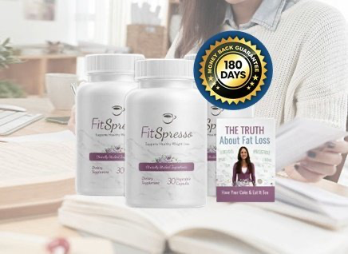

What Is FitSpresso And How Does It Work?
Most weight-loss capsules chase one lever — appetite, or energy, or fat-burning — and ignore the rest. FitSpresso was built around a different idea: that stubborn weight after 35 or 40 usually isn't a willpower problem, it's a metabolism that's quietly slowed down and stopped responding the way it used to.
That slowdown rarely gets explained. Cravings creep up in the afternoon, energy dips even after a full night's sleep, and the scale won't move no matter how carefully meals are tracked. It isn't laziness — it's a metabolic engine running colder than it should, burning fewer calories at rest and holding onto fat instead of releasing it.
FitSpresso is a daily capsule formulated to work on that engine directly. Instead of a single stimulant spike that fades by lunch, it leans on a blend of plant-based compounds chosen for how they support the body's own fat-burning and energy pathways — nudging metabolism back toward where it used to run.
There's no extreme diet attached, no banned stimulant list, no requirement to overhaul a routine overnight. One capsule fits into a morning that already exists. The formula is designed to work quietly in the background — supporting steadier energy, fewer cravings, and a metabolism that finally cooperates instead of fighting back.
This isn't positioned as an overnight fix, and it shouldn't be treated like one. It's a daily metabolic support supplement meant to be taken consistently, giving the body time to recalibrate rather than forcing a result it can't sustain.
Manufactured without harsh stimulants and under strict quality controls, FitSpresso is built for people who want a natural, non-prescription way to support metabolism and weight management over the long run — not a 48-hour promise that falls apart the moment it's stopped.
FitSpresso Ingredients
Every capsule is built around a short list of plant-based compounds, each one chosen for a specific role in metabolism, appetite, and energy — not a vague proprietary blend padded with filler.
- Green Tea Extract (Metabolic Catalyst): A well-studied plant compound linked to more efficient calorie use throughout the day, helping the body get more out of the energy it already takes in instead of storing the surplus as fat.
- Green Coffee Bean Extract (Steady Energy Support): Sourced from unroasted coffee beans, it supports metabolic activity and daily energy without the jittery spike-and-crash pattern common to harsh stimulants.
- Garcinia Cambogia (Appetite Regulator): A tropical fruit extract commonly used to support appetite control, helping take the edge off cravings so meals feel more like a choice and less like a fight.
- Apple Cider Vinegar Extract (Digestive Balance): Included to support healthy metabolic function and a more balanced relationship with digestion — the same mechanism behind ACV's popularity, without the harsh taste or acidity of drinking it straight.
- Cayenne Pepper Extract (Thermogenic Trigger): Supports thermogenesis, the process by which the body naturally increases the number of calories it burns as heat, adding a gentle metabolic push throughout the day.
- Chromium (Blood Sugar Stabilizer): An essential trace mineral that helps maintain balanced blood sugar levels — a key factor in keeping cravings and energy crashes under control.
None of these ingredients is exotic or unproven on its own — the formulation is the point. Combined at consistent daily doses, they're designed to support fat metabolism, appetite, and energy as one coordinated system rather than six separate bets.
FitSpresso Side Effects
FitSpresso is formulated for adults of different ages and lifestyles who want a natural, balanced approach to weight management — particularly those who'd rather avoid extreme diets, harsh stimulants, or restrictive routines to get there.
Every ingredient is sourced and evaluated for quality, purity, and safety, and the formula is free of unnecessary fillers or harmful additives. According to the official brand, manufacturing takes place in facilities that follow strict quality standards and GMP-certified guidelines, which supports batch-to-batch consistency.
With a growing base of users and no widespread pattern of serious adverse reactions reported when the product is used as directed, FitSpresso is generally considered well tolerated among people using it for metabolic and weight support.
As with any dietary supplement, anyone managing an existing medical condition, pregnant or nursing, or currently taking prescription medication should check with a healthcare professional before starting — a five-minute conversation that makes sure it fits safely into a personal health plan.
FitSpresso Dosage
FitSpresso is designed to slot into a routine that already exists, not replace it with something complicated. Each bottle holds 30 capsules — a full 30-day supply at the recommended dose.
The suggested approach is one capsule per day, taken with a full glass of water. Most users take it in the morning, often alongside breakfast, to support metabolism and energy through the hours that matter most.
Consistency is what makes the difference. Taking FitSpresso at roughly the same time each day helps maintain steady support for metabolic balance and appetite control, which is what turns a supplement into an actual habit instead of an occasional afterthought.
There's no multi-pill schedule to track and no complicated timing window — one capsule daily, working gradually alongside reasonable eating habits and normal daily activity.
As always, stick to the recommended dose. FitSpresso is built to work best paired with mindful eating, proper hydration, and regular movement, not as a substitute for any of them.
FitSpresso – Refund Policy
Every FitSpresso order is backed by a 60-day, 100% money-back guarantee — enough time to actually use the product daily and judge whether it fits into a real routine, not just a few days of guessing.
If it doesn't work out, a full refund can be requested within 60 days of purchase. The process is meant to be straightforward: no complicated forms, no runaround.
In practice, that means contacting customer support within the 60-day window to start a refund request. Unused bottles may need to be returned, and return shipping is the customer's responsibility; once the returned items are received, the refund is processed.
FitSpresso is produced in FDA-registered, GMP-compliant facilities that follow strict quality controls — the kind of manufacturing standard that tends to sit behind a company confident enough to offer a real guarantee.
Customer support can be reached at support@GetFitSpresso.com. Once a refund is approved and processed, a confirmation email follows; depending on the bank or card issuer, the funds typically post within several business days.
The guarantee exists to remove the risk from trying it — not to be a hurdle in fine print.
FitSpresso Customer Reviews
 Robert Harmon
Phoenix, AZ
Verified Purchase – 6 Bottles
Robert Harmon
Phoenix, AZ
Verified Purchase – 6 Bottles
"I'd hit a wall around 48 that nothing seemed to move. Diets I used to swear by just stopped working. About three weeks into FitSpresso the afternoon crash that used to send me straight to the vending machine finally eased up, and by week seven my jeans fit the way they did five years ago. I ordered the six-bottle pack because I'm not going back to how things were."
 David Moretti
Chicago, IL
Verified Purchase – 3 Bottles
David Moretti
Chicago, IL
Verified Purchase – 3 Bottles
"What sold me wasn't a dramatic before-and-after, it was how normal it felt. One capsule with coffee in the morning, no jitters, no crash by 3pm. Two months in I'm down a size and I'm not white-knuckling every meal anymore. That's the part nobody tells you matters most."
 Dorothy Sullivan
Denver, CO
Verified Purchase – 3 Bottles
Dorothy Sullivan
Denver, CO
Verified Purchase – 3 Bottles
"Menopause had basically rewritten my metabolism and I'd made peace with feeling tired all the time. FitSpresso didn't erase that overnight, but the cravings that used to derail my evenings got quiet within the first month, and my energy stopped bottoming out after lunch. Six weeks in, I finally feel like myself again."
FitSpresso – Where To Buy
There's one detail worth knowing before ordering, because it has caught some buyers off guard.
FitSpresso is not currently sold on Amazon, eBay, or Walmart. It's available exclusively through the official website. Several buyers have reported finding look-alike listings on third-party marketplaces that resemble the real product but come from unauthorized sellers with no guarantee the formulation, purity, or storage conditions match the original.
Products bought outside the official source also fall outside the 60-day money-back guarantee — there's no order record to refund, and no customer support tied to that purchase.
Buying directly from the official website keeps all of that intact: the genuine formula, manufactured under proper quality standards, with customer support and the full guarantee attached to the order.
To ensure you’re getting the authentic product, most users choose to visit the official website directly.
Is FitSpresso A Scam?
Based on a close look at the formulation, manufacturing, and guarantee, FitSpresso does not read as a scam. It's a legitimately formulated supplement built to support healthy weight management, metabolic balance, and daily energy as part of a sustainable routine.
The ingredients — green tea extract, green coffee bean extract, Garcinia Cambogia, apple cider vinegar extract, cayenne pepper extract, and chromium — are all disclosed on the label, each with a defined role in metabolism, appetite, or energy. There's no vague proprietary blend hiding what's actually inside.
Manufacturing backs that up: production takes place in FDA-registered, GMP-certified facilities that follow strict quality controls, supporting consistency from batch to batch.
It has limits, and it's worth being upfront about them. FitSpresso is not a substitute for treating a diagnosed metabolic or thyroid condition, and it won't out-work a diet that's fundamentally working against it. Anyone in that situation should still loop in a healthcare provider.
For the person who's tried the extreme diets, the stimulant-loaded fat burners, and the 5am routines that don't stick — and just wants a steadier, more natural way to support their metabolism — the math is simple. Sixty guaranteed days. If it doesn't work, the money comes back. The only real risk was never trying.

For those who want to verify product details or check current availability, the official FitSpresso website remains the safest and most reliable option.